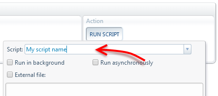
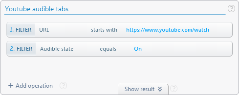

ACtl.runInTab
Runs Javascript code in the context of other tabs .
The code can be given as a function or as the name of an existing AutoControl script.
This is analogous to using the run script action to run code in one or more tabs,
but this function lets you do it programmatically from inside any script.
Limitation: This function cannot run code in protected pages.
ACtl.runInTab(tabSpec[,args],func)
ACtl.runInTab(tabSpec,scriptName) tabSpec Type: TabSpec
One or more tabs in which to run func or scriptName. It can be either a tab ID, a filter object, a tab-selection name or an array combining all that. Full details at Tab Specifier.
If more than one tab is specified, the code given by func or scriptName runs concurrently on each tab,
not sequentially.
Therefore, errors thrown in one tab don't prevent the execution of the code in the other tabs.
Limitation: Tabs containing protected pages will be omitted from the list. i.e. no attemp to run func or
scriptName will be made for those tabs.
args Type: Array Default: undefined
An array of values to be passed as arguments to the func function.
If a single argument is passed, it can be passed as is, without being enclosed in an array.
All values must be JSONable, since they have to be moved between contexts.
func Type: Function
The function to run in each tab specified by tabSpec. This function cannot use closure variables
since it will run in a different browsing context. However, it can still use global variables that exist in the page in which it will run.
scriptName Type: string

The name of any script created by the user.
The name matching is done ignoring letter case and redundant white spaces.
Returns Type: Promise Resolves to: Array
Returns immediately. The Promise will resolve to an array containing the return value of
func or scriptName for each tab in tabSpec (minus tabs containing protected pages).
These values must be JSONable, since they have to be moved between contexts.
Throws Type: JSONable
Error description if tabSpec is not a valid Tab Specifier or
if func is not a function or if scriptName doesn't exist.
This function also rethrows any errors thrown by func or scriptName.
If tabSpec specifies multiple tabs, only the first error that occurs in one of the tabs is rethrown.
The error value must be JSONable, since it has to be moved between contexts.
Examples
Close all tabs in the current window that contain the phrase "Not found" anywhere in the page.
let textToSearch = 'Not found' ;
let tabIds = await ACtl.runInTab('#currWinTabs', textToSearch, text =>{
if( document.body.innerText.match( RegExp(`\\b${text}\\b`) ) )
return ACtl.TAB_ID ;
}) ;
ACtl.closeTab(tabIds) ;
Use a custom tab-selection to select a Youtube tab that's playing video, then stop the video.
let [timeMark] = await ACtl.runInTab('Youtube audible tabs', ()=>{
document.querySelector('.ytp-play-button').click() ;
return document.querySelector('.ytp-time-current').innerText ;
}) ;
if(timeMark)
alert('Video stopped at ' + timeMark) ;
else
alert('No Youtube videos playing.') ;

And this is the tab-selection for selecting audible Youtube tabs:
 Forum
Install now from theChrome Web Store
Forum
Install now from theChrome Web Store